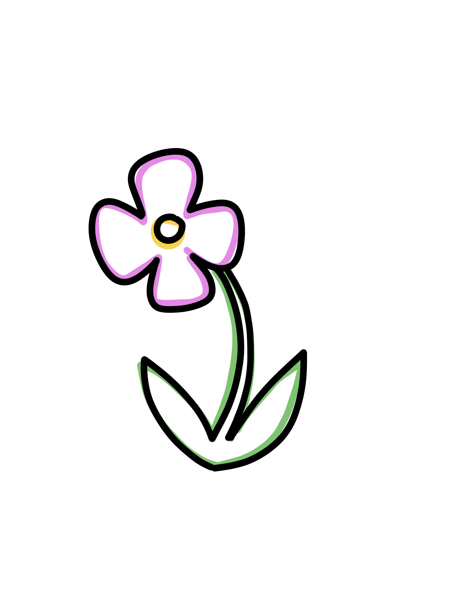
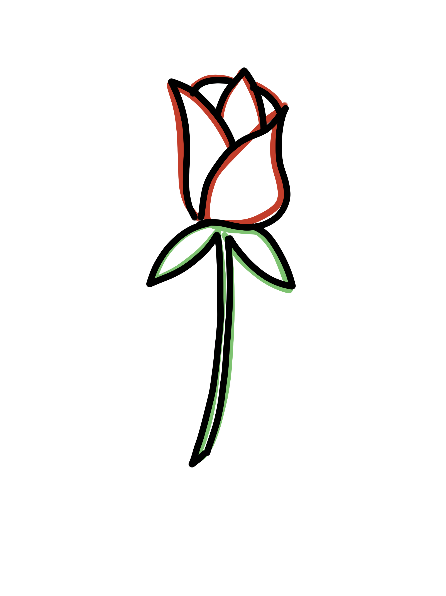
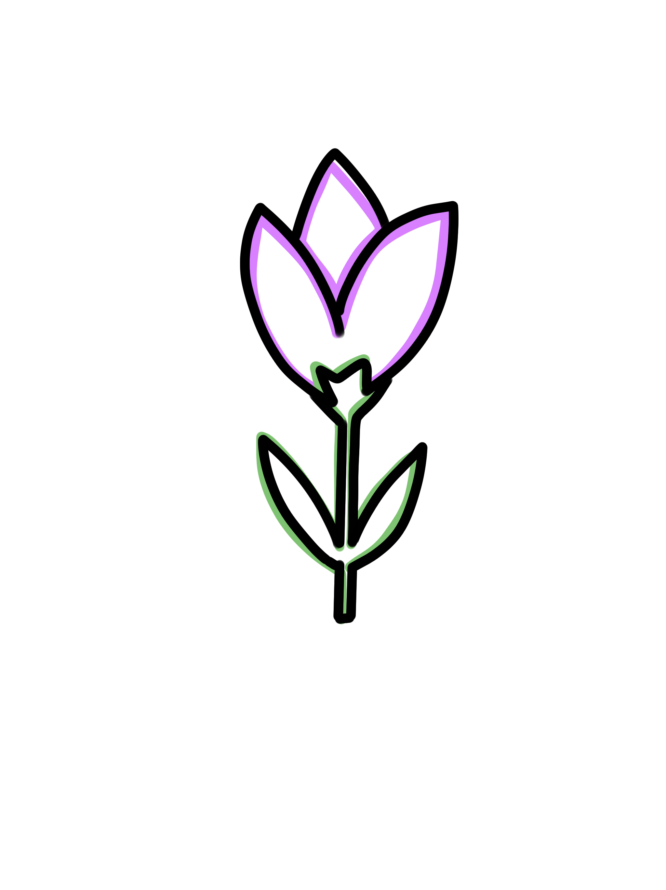

looking back five years ago...
what happened in the last five years that you never saw coming?
let's think about the NOW...
what feels like it is currently shifting... in you or the world around you?
what have you noticed?
looking forward, five years from now...
what's one thing you hope is true by then?
what's your hope about?

society & justice
people & love
technology & innovation peace & the unknown
peace & the unknown
 the world & planet
the world & planet
 the self & growth
the self & growth